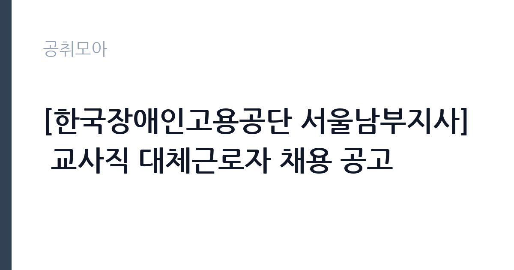

[공공기관] [한국장애인고용공단 서울남부지사] 교사직 대체근로자 채용 공고
한국장애인고용공단 · 서울 · 마감 2026-11-11 (D-8) · 출처 잡알리오

한눈에 보는 모집 조건
| 기관 | 한국장애인고용공단 |
|---|---|
| 공고명 | [한국장애인고용공단 서울남부지사] 교사직 대체근로자 채용 공고 |
| 고용형태 | 기간제 |
| 근무지 | 서울 |
| 게시일 | 2026-11-03 |
| 마감일 | 2026-11-11 (D-8) |
지원자격, 이렇게 읽으세요
- 「초중등교육법」 제21조에 따른 특수학교 정교사 자격을 취득하였거나 취득 예정인 자(자격기준은 접수마감일 기준으로 보유여부 판단)
- 각 모집분야별 결격사유, 자격요건 및 우대사항 등 상세내용은 공고문을 참고하시기 바랍니다.
기간제 근로자는 근로계약 기간이 정해진 신분입니다. 계약 기간과 갱신 가능 여부가 근로계약서에 명시되며 기간 만료 시 근로관계가 종료됩니다. 결원 보충이나 특정 사업 기간에 맞춰 채용되는 경우가 많아 업무 범위가 명확합니다. 이번 공고는 한국장애인고용공단에서 직접 진행하는 자체 전형으로, 응시자격과 제출서류는 공고문에 항목별로 제시됩니다. 초중등교육법 제21조에 따른 특수학교 정교사 자격을 취득했거나 취득 예정이어야 하고, 자격 보유 여부는 접수 마감일 기준으로 판단합니다. 임용예정일 기준 만 34세 이하여야 하는 연령 요건이 붙어 있습니다. 결격사유와 우대사항은 모집분야별로 공고문에 정리되어 있으므로 원문을 확인해야 합니다. 대체근로자 채용으로 근무 기간이 정해져 있고, 남자는 병역 요건을 충족해야 합니다. 서류는 접수 마감 이후 보완이 되지 않으므로 자격 요건과 증빙 서류를 마감 전에 모두 갖춰야 합니다. 공고문에 명시된 우대 사항은 해당 여부를 확인해 증빙을 첨부해야 가점이 반영됩니다. 자격 취득 예정자는 채용 공고의 예정자 허용 조항을 먼저 확인해야 합니다. 조항이 없으면 지원 자체가 반려될 수 있습니다. 이 공고 원문에 적힌 응시 조건 문구는 '「초중등교육법」 제21조에 따른 특수학교 정교사 자격을 취득하였거나 취득 예정인 자(자격기준은 접수마감일 기준으로 보유여부 판단)'입니다. 문구를 그대로 읽고 본인 해당 여부를 하나씩 표시해 두면 서류 단계에서 탈락하는 일을 줄일 수 있습니다.
이 공고의 포인트
이 공고의 첫 번째 포인트는 고용 형태입니다. 계약 기간이 정해져 있어 근무 종료 시점이 명확합니다. 그만큼 짧은 기간에 어떤 실적을 남길지가 중요해집니다. 두 번째는 업무 범위가 명확하다는 점입니다. 직업훈련 교사(특수학교 정교사) 직무로 채용되므로 배치 이후 담당 업무가 크게 흔들리지 않습니다. 세 번째는 근무지입니다. 서울 지역 근무로 접근성은 좋지만 그만큼 지원자가 몰리는 지역이므로 경쟁률을 넉넉히 잡아야 합니다. 공고가 올라온 지 얼마 되지 않아 아직 지원자 수가 많지 않을 가능성이 있습니다. 같은 직무 공고 중에서는 접수 마감이 가장 빨라 일정을 앞당겨 잡아야 합니다. 선발 인원은 공고문에 명시되어 있으니 모집분야 항목을 함께 확인하십시오.
전형은 어떻게 진행되나
채용 절차는 공고문에 안내된 순서대로 진행되며, 서류 접수 마감 후에는 추가 접수나 서류 보완이 이뤄지지 않는 것이 원칙입니다. 서류심사에서는 응시자격과 제출서류의 형식 요건을 기계적으로 확인하므로, 경력 증명서의 기간과 직무 내용이 공고의 요건과 정확히 맞아야 합니다. 면접은 지원자 수에 따라 집단면접과 개별면접으로 나뉘고, 직무 관련 질문과 상황 대응 질문이 함께 나옵니다. 합격자 발표는 개별 통보 또는 홈페이지 게시로 이뤄지며 이후 임용 절차가 진행됩니다. 전형 일정이 공고문에 날짜로 명시되어 있으니 달력에 옮겨 두고 준비하십시오.
원문에서 확인한 전형 방식
○ 「초중등교육법」 제21조에 따른 특수학교 정교사 자격을 취득하였거나 취득 예정인 자(자격기준은 접수마감일 기준으로 보유여부 판단) ○ 임용예정일 기준 만 34세 이하에 해당할 것 * 각 모집분야별 결격사유, 자격요건 및 우대사항 등 상세내용은 공고문을 참고하시기 바랍니다.
이런 분께 추천해요
- 특수학교 정교사 자격을 보유했거나 취득 예정인 분
- 장애인 교육·훈련 경험이 있는 분
- 정해진 대체 근무 기간 동안 근무할 수 있는 분
지원 전 체크리스트
- 응시자격 요건과 경력 기준을 충족하는가 — 경력은 증명서로 입증해야 합니다
- 계약 기간과 근무 시작일·종료일을 확인했는가
- 제출서류 목록을 모두 준비했는가 — 누락 시 서류 단계에서 탈락합니다
- 접수 마감 2026-11-11 이전에 접수 방식을 확인해 제출했는가
모집 일정과 제출 타이밍
2026-11-03에 공고가 올라왔고 접수는 2026-11-11까지입니다. 남은 기간은 8일이며, 이 기간에 자격증 사본과 경력증명서, 주민등록등본 같은 기본 서류를 모두 준비해야 합니다. 경력증명서는 발급에 며칠이 걸리는 경우가 있으니 가장 먼저 신청하십시오. 접수는 온라인과 우편·방문으로 나뉘는 경우가 많고, 우편 접수는 도착 기준으로 판정되므로 마감일 소인만 믿으면 안 됩니다. 면접 일정은 서류 발표 후 개별 통보되므로 제출 후에도 연락을 받을 수 있도록 유지해야 합니다. 임용 예정일이 빠르게 잡히는 공고이므로 현재 일정과 겹치지 않는지 미리 확인하십시오. 서울 근무지는 대중교통 접근성이 좋은 대신 주차와 통근 시간이 변수입니다. 출퇴근 경로를 미리 확인하십시오. 마감까지 2주 안팎이 있어 준비할 시간은 있지만 미루면 촉박해집니다. 선발 인원은 공고문의 모집분야 항목에 직종별로 제시되어 있습니다.
직무 이해하기: 공공기관
한국장애인고용공단 서울남부지사 교사직 대체근로자는 장애인 직업능력개발 훈련 과정의 수업을 맡습니다. 훈련생의 장애 유형과 수준을 진단해 학습 목표를 세우고, 직업 기초 능력과 직무 기능을 가르칩니다. 수업 자료와 평가 도구를 만들고, 훈련생의 출결과 성취도를 기록해 관리합니다. 훈련 과정 운영 협의회에 참여하고, 필요하면 취업 연계를 위한 평가 자료를 작성합니다. 휴직자의 담당 과정을 인수받는 자리라 인수인계 기간이 짧습니다. 직무 교육은 입사 후 기관 자체 계획에 따라 진행되므로 사전 경험이 없어도 시작할 수 있습니다.
자기소개서 작성 팁
지원서는 특수교육 실습과 수업 경험을 대상·목표·결과 순서로 정리하는 것이 효과적입니다. 맡았던 훈련 과정과 훈련생 수, 사용한 교수 방법, 성취 변화를 구체적으로 쓰십시오. 특수학교 정교사 자격 취득 일정은 요건과 직결되므로 분명히 밝히십시오. 장애인 직업훈련이 취업으로 이어지는 과정이라는 점을 이해하고 있다는 문단을 더하면 차별화됩니다. 직무 경험이 많지 않다면 경험의 양보다 과정을 구체적으로 쓰는 편이 낫습니다. 어떤 상황에서 무엇을 판단했고 어떤 결과가 나왔는지 순서대로 서술하면 신뢰가 생깁니다. 지원 동기와 기여 방안은 한 문단씩 짧게 유지하고, 가장 자신 있는 경험에 분량을 몰아주십시오. 마지막 문장은 포부보다 구체적인 실행 계획으로 끝내는 것이 좋습니다.
면접 준비 포인트
면접에서는 수업 설계와 훈련생 지도 경험을 확인합니다. 장애 유형이 다른 훈련생이 한 반에 있을 때 수업을 어떻게 구성할지, 학습 성취가 더딘 훈련생을 어떻게 지원할지 묻습니다. 작성해 본 개별화 교육 계획이나 평가 자료를 구체적으로 답하십시오. 훈련과 취업을 연결하는 공단의 역할을 이해하고 있는지도 확인 대상입니다. 답변은 상황, 판단, 조치의 순서로 정리하면 전달이 분명해집니다. 모르는 질문에는 모른다고 밝히고 확인 방법을 제시하는 편이 억지 답변보다 낫습니다. 마지막에는 근무 의사와 함께 2026-11-11 이후 일정에 언제든 응할 수 있다는 점을 전달하십시오. 지원 기관의 최근 사업이나 조직 개편 내용을 확인해 두면 지원 동기 질문에서 차이가 납니다.
급여·근무조건 읽는 법
한국장애인고용공단은 알리오 2025년 결산 공시 기준 일반정규직 1인당 평균보수 6,132만원, 신입사원 초임 3,280만원, 무기계약직 평균보수 3,296만원으로 공시되어 있습니다. 이번 채용은 교사직 대체근로자로 정해진 기간만 근무하는 신분이라 공시된 정규직 평균값이 그대로 적용되지 않고, 공단의 대체근로자 임금 기준과 경력에 따라 보수가 정해집니다. 계약 기간과 월 보수를 함께 확인하십시오. 2026년 적용 최저임금은 시급 10,320원, 월 환산 2,156,880원(주 40시간·209시간 기준)입니다. 고용노동부 고시 제2025-47호로 확정된 금액입니다. 공고문에 금액이 제시되지 않은 항목은 원문 보수표나 처우 설명에서 확인해야 하며 확인되지 않은 수치는 쓰지 않는 것이 원칙입니다. 비교할 때는 월 급여뿐 아니라 상여·명절휴가비·복지포인트·초과근무수당까지 포함한 연간 총액으로 계산하십시오. 기간제라면 계약 기간 동안의 총액을, 무기계약이라면 호봉 상승과 정년까지의 누적 소득을 기준으로 판단하는 편이 정확합니다.
자주 묻는 질문
- 선발 인원은 몇 명인가요?
공고문의 모집분야 항목에 직종별 인원이 표로 제시되어 있습니다. 첨부된 공고문 원문에서 확인하십시오. - 근무지는 어디인가요?
서울 지역의 한국장애인고용공단 소속 근무지입니다. 세부 주소와 출퇴근 조건은 원문 공고문에서 확인할 수 있습니다. - 보수는 얼마인가요?
채용 신분(기간제)과 기관 임금 규정에 따라 정해지며 구체적인 금액은 공고문 처우 항목에 제시됩니다. 금액이 공개되지 않은 경우에는 원문의 보수표를 확인하십시오.
함께 보면 좋은 공고
[공공기관] 한전KDN(주) 경남사업처 배전자동화 성능관리분야 비정규직 모집공고 — 마감 2026-11-18[공공기관] 한국폴리텍대학 남대구캠퍼스 업무직(대학운영직_조리사) 채용(2차) 공고 — 마감 2026-11-11[공공기관] 한국폴리텍대학 남대구캠퍼스 행정지원직원(휴직대체_학사지원직) 채용 공고 — 마감 2026-11-11출처: 잡알리오 공개정보를 바탕으로 공취모아가 정리한 안내글입니다. 모집 조건·일정은 변경될 수 있으니 지원 전 반드시 원문 공고문을 확인하세요. 본 글은 정보 제공용이며 합격을 보장하지 않습니다.